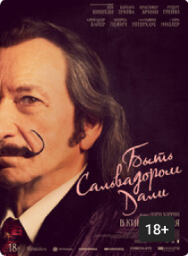

Быть Сальвадором Дали (18+)
Режиссер: Мэри Хэррон
Драма, США, 2022
Kinopoisk - 6.5
1974 год. Сальвадор Дали — самый знаменитый и эпатажный художник на планете. Однако подлинная власть в мире искусства — в руках у Галы, его жены и музы. Их страстный брак переживает не лучшие времена, а охваченный бурными эмоциями гений закатывает бесконечные вечеринки вместо занятия творчеством. Юному ассистенту Джеймсу выпадает задача любой ценой добиться, чтобы Дали подготовился к большой Нью-Йоркской выставке. Невольно Джеймс оказывается затянут в безумный мир Дали и из первых уст узнаёт историю жизни самого необычного художника всех времен.